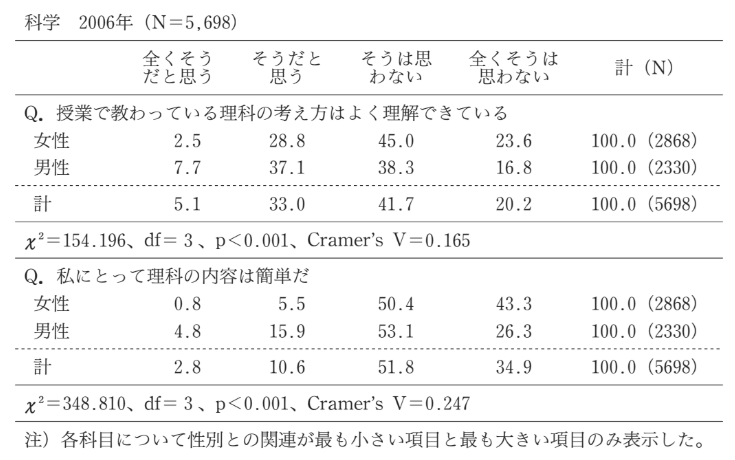
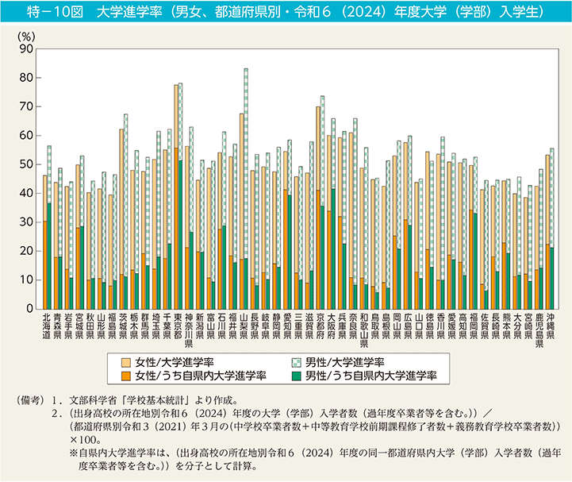
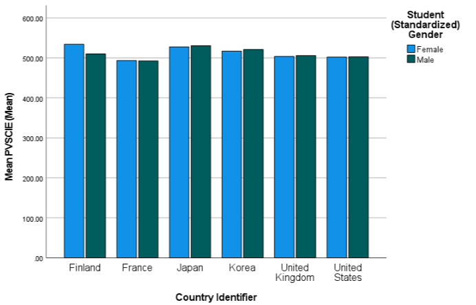
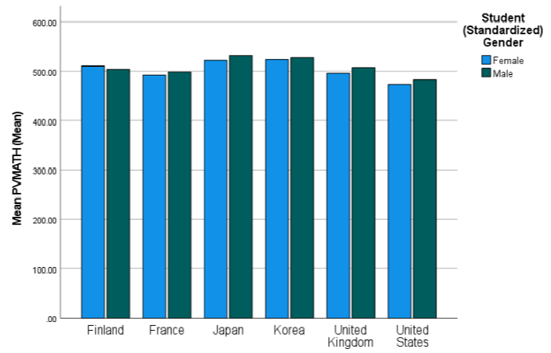
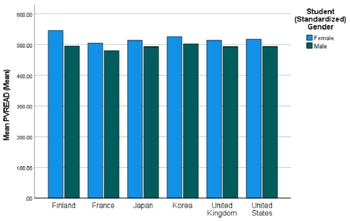
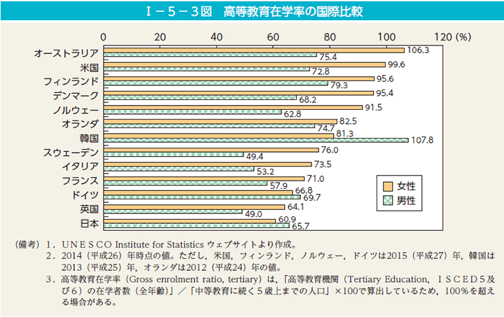
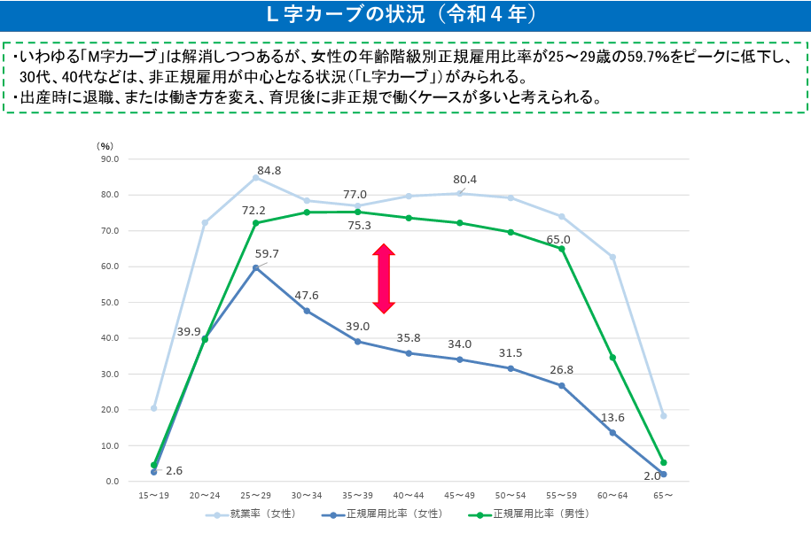

4 社会化（2）：教育とジェンダー
社会における教育の役割
授業で使用するスライドです。右下のボタンから全画面表示（Fキー）も可能です。
4.1 コメントへのフィードバック
「なぜこれを習うんだろう」と思った経験や、「○○の人たちには有利だけど、自分には難しいな」（または反対に自分には有利）だと感じた経験
- 数学の公式や複雑な計算は、自分自身が大変苦手だったこともあるが、日常生活で使用する場面がほとんどなく（今後もなさそう）、なぜ学ぶのか疑問に感じていた。また、数学が得意な人は有利な一方で、苦手な人には基本的なことを理解すること自体が難しく、テストの点数にも差が出た。
- なぜ翻訳機が普及しているのに、英語を習うんだろうと思いました。また、過去を振り返らないタイプなのでなぜ歴史を習うんだろう？と感じました。
- 数学Ⅱ・数学Ⅲ、古文など、将来大人になってから使う機会がほとんどないと思う科目を、なぜ勉強する必要があるのか疑問に感じていた。特に古文は、一人ずつ廊下に呼ばれて暗記テストを受けていたが、テストのためだけに暗記することに意味があるのだろうかと思っていた。
- 読書感想文や自由研究も、やる意味が分からず、賞を取りたいという気持ちもなかったため、親にやってもらっていた。一方で、普段から本を読むことや調べ学習が好きな子は真面目に取り組んでいて、すごいと思っていた。同じ課題でも、興味や得意なことによって意欲に差が出るのだと感じた。また、親に手伝ってもらえるかどうかによっても、取り組みやすさや完成度に差が生まれるのではないかと思う。
- 学校で英語を学ぶ中で、文法や単語を覚えることはできても、実際に外国人と会話するときにはうまく話せないと感じたことがある。テストで点数を取るための勉強と、実際に使える英語には違いがあると思った。また、家庭で英語に触れる機会が多い人は、そうでない人に比べて有利な場合もあると感じる。このように、同じ教育を受けていても、家庭環境や経験によって学びやすさに差が生まれるのではないかと考えた。
- 一番「なぜ」と思ったのは古文と漢文だった。返り点やレ点の読み方を覚えても、日常で使う場面がまったく想像できなかった。今振り返ると、教養として残すべきものを誰かが選んだ結果なのだと思う。ただ、実際に役に立つかどうかよりも、「これを知っているのが教養ある人」という基準が先にあるように感じる。有利・不利の面では、音楽の授業がわかりやすい例だと思う。ピアノを習っていた人は楽譜がすぐ読めて、合唱コンクールの伴奏も任されていた。自分は楽譜を読むところから苦戦していたので、スタート地点がそもそも違うと感じた。読書感想文も、家に本がたくさんあって普段から読んでいる人の方が明らかに書き慣れていた。学校で一斉に「同じこと」を教えていても、家で何に触れてきたかで有利不利が出てしまう。今回の「知識の社会的構成」の話を聞いて、あのとき感じた差はそういうことだったのかと思った。
- 私は、将来使う機会があるのか分からない数学の公式などは、覚える意味があまり分からず、勉強することに疑問を感じることがあった。また、授業の内容によっては、もともと得意な人や家で勉強する環境が整っている人の方が理解しやすく、有利なのではないかと思うこともあった。同じ授業を受けていても、一人ひとりの得意不得意や家庭環境によって学びやすさに違いがあると感じた。
- 数学なので梨沢引き算掛け算の他に、微分積分などの日常では使わない計算を習った時は、なぜこれを学ばなければいけないのかと疑問に思った。また、家庭科の授業においては、女性である私は有利だなと思った。幼い頃から母の手伝いをしていたからだ。
- 歴史、古文、音楽、美術、などの教科を学ぶ意義がわからなかった。
- 体育の授業で球技やダンスなどその種目の部活の人や習い事でやっている人が有利だと感じるものがあった。高校生のとき、私は受験で使う科目が多かったため数学など使わない科目の人は好成績を取ることも難しく自分には有利だと感じた。
- 学校で英語を習う中で、文法や単語を覚えることが中心で、実際に英語を話す練習が少ないことに疑問を感じた。また、英会話に慣れている人や海外経験がある人は有利だが、そうした経験がない人にとっては難しいと感じることがあった。
- 学校で習ってきたことの中で、なぜこれを習う必要があるのだろうと思ったのは、数学の難しい公式や計算問題です。将来、日常生活で使う機会が少ない内容もあり、何のために勉強しているのか疑問に感じることがありました。また、数学が得意な人にとっては簡単な問題でも、苦手な人にとっては理解するのが難しく、同じ授業を受けていても得意不得意によって有利、不利が生まれると感じました。
- 学校の英語の授業では、単語や文法を覚えるだけでなく、英検や入試に向けた問題を解く練習をすることが多かった。英語が得意な人にとっては点数を取りやすい一方で、英語が苦手な人にとっては授業についていくことが難しく、不利に感じることもあると思った。また、家庭で英語を学ぶ機会が多い人と、学校の授業でしか英語に触れない人では、同じ授業を受けていても差が生まれやすいと感じた。
- なぜこれを習うんだろうと考えたことはあまりない。自分で考えて学習をするような自由さと想像力を持っていない限りは学校はそういう場所、考えても仕方がないだと思っていたため。それに、習ったことというのはそれだけが目的なものではなく、どこかで同じような視点になった時に思い出して使えたりするものなので。でも、英語などは自分にとって有利だと思う。家でも英語を喋る私はそれは喋れるだろうけど、普段から英語を使うこともないのに文法文法ってやらされている他の人はあんまり意味がないよなぁと思っていた。立教の英語も、上級英語と最下位のクラスで全然やっていることが違うのが納得いかないです。アドバンテージとは思えません。
- 学校で習う内容の中では、英語の授業で文法や単語を覚えることに、どのような意味があるのか疑問に思うことがあった。特に、テストで点数を取るために覚えることが中心になり、実際に英語を使う場面とは結びついていないと感じることもあった。また、暗記が得意な人はテストで有利になりやすい一方で、実際に内容を理解していても、覚えることが苦手だと点数につながりにくい場合があると思った。
- 私がこれまで学校で習ってきたもので、自分には難しい、なぜ習うんだろうと感じたものは漢文です。古文の授業でわたしは古文は好きでしたが、漢文だけはつまらなく、かつ難しく、さらに現代で全く使う場面がないことから価値を見いだせませんでした。一般入試で出題されることがあるので、一般受験の人には必要であったと思いますが、私は違ったので学ぶ必要性を感じませんでした。
- 中学校で敬語や適切な言葉遣いを学んだ経験が印象に残っている。私は野球部でも礼儀や目上の人への接し方を教わっていたため、こうした学習を社会生活に必要なものとして受け止めていた。しかし、今回の授業を踏まえると、家庭環境や課外活動によって、学校で求められる言葉遣いに接する機会には差があると考えた。つまり、全員に同じ内容を教えることは平等に見えても、既にその知識や習慣を身に付けている生徒ほど有利になる可能性がある。学校で教える知識や規範は必ずしも中立的ではなく、特定の社会集団の価値観を反映している場合もある。教育の公平性を考える上では、何を教えるかだけでなく、誰を基準にその内容が選ばれているのかを問い直す必要があると感じた。
- 体育の授業で球技や水泳をするときに運動が得意な人は有利だと感じたことがあります。特に経験者は基本的な動きが身についているため授業でも活躍しやすいですが未経験者は周囲についていくことが難しい場合があります。同じ授業を受けていてもこれまでの経験によって評価に差が出ることがあり学校の授業は全員に平等であるように見えても必ずしも同じ条件ではないのだと感じました。
- 今まで、学校で習ってきたことに関して上記のようなマイナスな感情になったことはなかったのだが、強いて言うならば「音楽」の授業に関しては「どうしてやらなければならないのか」ということを良く考えていた。私はそこまで音楽が得意な方ではなく、ピアノなどの楽器が弾けるわけでもなかったので、習い事をしていて、楽器を弾ける人や楽譜が読める人が有利な科目だなと感じてしまい、あまり積極的に参加しようとは思えなかった。
- 私は、情報の授業で習ったプログラミングについて、まぜこれを習うんだろうと思いました。プログラミングは本当に詳しくなれば仕事にできるかもしれません。しかし、高校の授業ではもちろんそこまで学ぶことはできません。そして、高校で習うレベルのプログラミングではAIに書かせることもできるし、そもそも日常生活でプログラミングが必要になる場面がありません。習っても活かす場がないことに疑問を抱いていました。
- 私は、ずっと数学を習うことが不思議で溜まりませんでした。算数までは、買い物の時の計算だったりお釣りの計算だったりで使うから分かるんですけど、二次方程式とかは本当に理解できませんでした。そのためすごく苦手でした。幾何学とか、頭の中で図を回転させたり、開いたりすることが得意な人の方が有利じゃんとは思っていました。
- 歴史のテストは京都に住んでいる生徒の方が有利なのでは？京都周辺の地域に関する歴史的な内容がででくることが多く、京都に住む高校生と関東に住む高校生では歴史の授業を受ける上で、想像しやすさは全然違うのではないかと感じた。
- 私は運動が大嫌いなため、体育の授業に関しては、球技、マット運動、跳び箱、ダンスなど、どんな内容でもなぜこれを習わなければならないんだろうと感じていました。座学と比べて受験で使わない上に楽しくもないため、できて何のためになるのか当時本当にわかりませんでした。運動神経がいい人たちには有利で楽しそうでしたが、自分には難しく恥さらしなだけだと思っていました。
- 高校で物理の授業を受けていた際に、文系の大学に行く自分にとって、将来使う場面が無いため、どうして習うのだろうと思った。
- 数学や理科で勉強する複雑な計算や定理は、文系の大学に行く人や社会人になる人にはあまり意味がないと思った。
- 中学校や高校で学んだ古典の授業はなぜ学ばなければならないのか疑問に感じた。日常生活で古語を使用して話したりはしないのに、独特な文法を必修として学ぶ必要はあるのかと思った。体育の授業で、運動能力や体格は人によって大きな差があるのにもかかわらず、一律に成績が算出されてしまうことにも疑問に感じた。
- 中学校の音楽で、楽譜の読み方やリコーダーをなぜ全員が学ぶのか疑問に思ったことがあります。私は吹奏楽部だったため有利でしたが、経験のない人には難しかったと思います。将来その知識、経験を使う人は限られるとは思う一方で、学校には家庭環境に関係なく、普段触れない知識や文化に触れる機会を全員に与える役割もあるのではないか、とも考えました。
- 私は走るのが遅く苦手意識を持っているため、陸上競技の授業や運動会の徒競走があるたびに、どうして速く走って競争をしなければいけないのかと思っていた。また、中学校で道徳の授業が毎週あったが、物語を読んで主人公の気持ちを考えたり自分だったらどうするかを考えたりするのは、中学生になれば授業を受けなくてもできるのではないかと感じていたため、なぜ道徳の授業があるのか不思議だった。
- これまで学校で習ってきたことのうち、なぜ習うのか疑問に思った経験として挙げられるのは古文です。現代で使われていない単語や言い回しなどをわざわざ勉強する必要があるのかと思ったことがあります。実生活に直接使ったり、役立ったりするものではないため、授業内で優先的に習うべきことなのかと疑問に感じていました。
多数派の共通コメント：「実用性の疑問」と「暗黙の有利・不利」
- 「実用性（役に立つか）」の疑問と学習意欲の低下
- 対象：数学の複雑な計算（微分積分・二次方程式）、古文・漢文、物理、プログラミング。
- 理由：「日常生活や将来の仕事で使わない」「なぜこれを必修として学ばされるのか分からない」という、実用主義的な観点からの強い疑問。
- 「スタート地点の不平等（文化資本・経験格差）」への気づき
- 音楽・体育・英語：「ピアノを習っていた人」「スポーツ経験者」「海外経験や家庭で英語に触れる環境がある人」が圧倒的に有利であり、同じ授業・同じ評価基準であっても、これまでの家庭環境や課外活動によって大きな差が生まれているという実感。
少数派
- 「教養の基準」の相対化と、学校評価への不信
- 「古文や漢文は役に立つかよりも、『これを知っているのが教養ある人』という基準が先にある」「立教の英語クラス分け（上級と下位で処遇が違うこと）はアドバンテージとは思えない」といった、制度や評価基準そのものに対する批判的な分析。
- 「学習環境・親の支援」による格差
- 「読書感想文や自由研究は、親に手伝ってもらえるかどうかによって完成度に差が出る」といった、家庭の経済力や文化的サポートの介入への着眼。
- 地理的・空間的条件による不平等
- 「京都周辺の歴史は、京都に住んでいる生徒の方が圧倒的に想像しやすくて有利なのではないか」という、空間的・地域的条件による有利・不利の指摘。
一斉教授方式・学年制・学級制に適した/適さない教室・学校建築の特徴
- 学力のレベル感が揃わない可能性が高いため、先生たちはどうしても最下層に合わせて授業を展開せざるを得なくなる。
- 席が決まっていて同じクラスの人たちと接するので、大学と違って親密になりやすいと思いました。
- 中学校では、授業中にペアやグループで考えたり、意見を共有したりする機会が多く、発表や発言にも積極的な生徒が多かった印象がある。また、大学では同じクラスの人と会うのは多くても週3回の1コマ程度だが、中学校では毎日1?6時間目まで一緒に過ごし、給食を食べたり掃除をしたりと、授業以外の時間も多く共有していた。そのため、クラスの人同士の仲が深まりやすかったと思う。体育祭や文化祭など、クラス全員で協力するイベントも多く、団結力が生まれやすい環境だった。また、担任の先生とも関わる時間が長く、距離が近かった記憶がある。大学と比べて、中学校は授業を受けるだけの集団ではなく、学校生活全体を一緒に過ごす集団だったことが大きな特徴だと思う。
- 中学校のクラスは、年齢が近い生徒が同じ教室で多くの授業を受け、学校生活の大部分を一緒に過ごす集団である。一方、大学では授業ごとに一緒に学ぶ人が変わり、興味や関心に応じて人間関係を築くことができる。中学校ではクラス全体で行動する機会が多く、集団としてのまとまりが重視されるが、大学では個人の選択や自由が大きい点が特徴だと思う。
- 一番大きいのは、とにかく一緒にいる時間が長くて、逃げ場がないことだと思う。大学の語学クラスは授業が終われば解散で、仲良くなるかどうかも自分で選べる。中学のクラスは自分で選んだわけでもないのに、授業から給食、掃除、行事まで一日中同じメンバーで過ごしていた。だから合わない人がいても、一年間はうまくやるしかなかった。あとは担任の存在が大きい。大学の先生は授業の内容にしか関わらないけど、中学の担任は服装や提出物、友達関係、進路まで見ていた。さらに、合唱コンクールや体育祭で「クラスで団結しよう」という空気が強くて、誰かが遅刻すると全体が注意されるような連帯責任もあった。大学の集団が「たまたま同じ授業を取っている人たち」なら、中学のクラスは「一つのチームでいることが前提の集団」だったと思う。
- 中学校のクラスは、大学の語学クラスなどと比べて、授業を受けるだけでなく、休み時間や昼食、行事なども同じメンバーで過ごすことが特徴だと思う。私は女子校だったので、クラスの中で友達関係が深まりやすくクラス全体で一緒に活動する機会も多かった。一方で、毎日同じメンバーと過ごすため、人間関係がうまくいかないと気まずく感じたり、周りに合わせなければならないと感じたりすることもあると思う。中学校のクラスは、勉強するための集団であると同時に人間関係や集団での過ごし方を学ぶ場でもあると感じる。
- 中学のクラスは大学に比べて、同じになる頻度がさらに高いことと、体育や体育祭、合唱交換会など、協働する機会が多い。
- 全員1年間固定でクラス以外の行事なども一緒に過ごしたりする。
- 大学のクラスは仲の良い友人や知り合いがいなくてもやっていけるイメージがあるが、中学のクラスはそのような友人などがいないと浮いてしまったり、学校行事などもクラス単位で行われるため学校生活に大きく影響していくイメージがある。
- 中学校のクラスは、大学の集団と比べて、年齢や学力が近い人たちが同じクラスに所属し、授業だけでなく給食や行事なども一緒に過ごす時間が多い。また、クラス替えがあるまで同じメンバーで過ごすため、友人関係が深まりやすい一方、人間関係が固定されやすいという特徴もある。
- 中学校のクラスは、勉強が得意な人も苦手な人も、運動が得意な人もそうでない人も、さまざまな人が同じクラスに集まっていることが特徴だと思います。また、自分でクラスを選ぶことは基本的にできず、学校側によってクラス分けがされます。大学では学科やコース、興味のある授業などによって集まる人がある程度決まりますが、中学校では自分と違う考え方や個性を持つ人とも関わる機会が多いと思います。
- 中学校のクラスは、大学の語学クラスや学科と比べて、学力や興味、家庭環境などが異なる人たちが同じクラスに集まっていることが特徴だと思う。また、基本的にクラス替え以外では同じメンバーで過ごすことが多く、授業だけでなく、給食や学校行事などでも一緒に活動する。そのため、勉強が得意な人も苦手な人も関わる機会が多く、さまざまな価値観を知ることができる集団だと思う。
- 顔と名前を覚えないといけないのが大変である。大学は自分で学ぶためにきているが中学校でそのような理由を見つけることも自分一人で全てをこなすことも不可能である。誰かが休んだら誰かが補い合える優しさは存在するが、同じ授業でも寝てる人勉強している人先生を威嚇している人などそれぞれが目立って別の方向を向いている。大学でそんなことをしても相手にもされないが、中学校だと学級の話し合いになることもある。義務教育最後の学校は人生最後の社会の縮図だと感じていた。また、中学校の方が大人との距離が近いと思う、私はいまだに中学校の恩師と仲が良いが、大学では特に関わり合いがない。
- 中学校のクラスは、大学の語学クラスなどと比べて、同じメンバーと過ごす時間が長く、授業以外でも関わる機会が多いことが特徴だと思う。また、学力や興味、家庭環境などが異なる人たちが同じクラスに所属し、基本的に同じ授業を受ける。そのため、自分と異なる考え方を持つ人と関わる機会がある一方で、クラス内の人間関係や雰囲気が学校生活に大きく影響するという特徴もある。
- 中学校のクラスには大学生のクラスとは違い、固定されており、団結力も上がりやすいと思います。理由は体育祭や文化祭などで、クラスで協力して活動する行事が多いからです。
- 中学校のクラスの特徴は、本人の意思で所属する集団を選べず、同じ生徒と長期間にわたって授業だけでなく学校生活全般を共にする点にあると考える。大学では授業ごとに人間関係が変化し、必要に応じて他の集団と関わることができる。一方、中学校では授業、給食、清掃、学校行事などを通じて継続的に同じ人間関係が形成される。そのため、仲間意識や協調性が育まれやすい反面、集団内の暗黙のルールや同調圧力が強まり、周囲と異なる行動を取ることが難しくなる場合もある。また、教師が学習面だけでなく生活態度や人間関係にも関与する点も特徴的である。つまり、中学校の学級は単なる学習集団ではなく、生徒の価値観や行動様式を形成する社会化の場であると考える。
- 中学校のクラスは基本的に同じメンバーで毎日一緒に過ごす集団であるため周囲の目を気にし些細なことにも気を配っていました。一方で大学では自分で付き合う人や一緒に過ごす人を選ぶことができるため中学校ほど周囲に気を使わずに過ごせると感じます。また中学校ではクラス全体で行動する機会が多く人間関係が学校生活に大きく影響しますが大学では授業ごとに関わる人も変わるため人間関係の自由度が高いことが特徴だと思います。
- ほぼほぼ毎日顔を合わせて、同じ授業を受けているとなり人という認識に加えて、一緒に何かを成し遂げる仲間であり、当時の「自分の居場所」のような感覚があり、絆的な何かを感じていた記憶がある。特に後者は、当時の私を取り巻く社会のほぼ全てのような認識と言っても良いかもしれないです。
- 中学のクラスは大学の集団に比べてまとまりが強いと思います。中学のクラスでは、全ての授業を一緒に受け、体育祭で優勝を目指したり修学旅行で一緒に行動したりといったようにイベントでも団結します。また、学級会を行い、クラス目標を決めたり、時にはレクをしたりもします。このような活動を通して、仲も深まり、クラスとしてのまとまりがでてきます。一方で、大学のクラスは一週間に数時間一緒に授業を受けるだけで中学のクラスほど仲良くはならないというのが特徴的だと思います。
- 男女比率がしっかりしていて、先生が扱いやすいように、うるさい生徒やしっかりした生徒がバラバラにいて、仲が悪そうな人は離されるイメージ。また、1人は合唱コンクールでピアノを弾ける人がいたり。
- 1年間ほぼ毎日同じメンバーと顔を合わせ、多くの同じ時間を共にするため大学に比べ仲良くなりやすいのではないかと思う。共通の話題が多く共有できるのが人々が仲良くなる一つの方法なのでhないかと感じた。逆に、中学校では自分のクラスが自分自身が思う社会の中心となりがちだから、クラスでうまくいかないことがあると少し大変。この面では大学はずっと同じメンバーではないので自分の居場所が必ずしもクラスとはならない。
- 中学校のクラスは、語学だけではなくすべての授業で一年間一緒であるというものだった。また、人数の規模も大学の語学クラスよりも多く、二倍ほどいた。そのため、大学よりも友達ができやすかった、人間関係が見えやすかったと思う。現在の語学クラスでは中学校のクラスよりも人数が少ないにも関わらず、名前がわからない人すらいる。
- 中学校のクラスは、大学の語学クラスや学科・コースと比べて、学力や興味、将来の進路が異なる人たちが同じ集団に所属している点、校則を守ることが社会のルールよりも優先される場合がある点が特徴だと思う。
- 中学校では共通点の少ない人たちが多く集まる。高校では文理選択があり、大学では同じ学部で同じ分野に興味がある人たちが集まりやすい。
- 中学校のクラスは1日中同じメンバーやほぼ固定の教室で授業を受けたり、給食を食べたりする集団行動の要素が強い。その一方で、大学の集団は授業が終われば、各自が選んだ時間割へと分散していく傾向にある。そのため、集団の意識は弱くなると思う。
- 中学校のクラスは大学のクラスと比較したときに圧倒的に一緒に過ごす時間が長いと思いました。大学のクラスはその授業が終われば解散することが多いですが、中学校のクラスは全授業一緒で、昼ごはんも掃除も基本的にはずっとその集団で過ごしていると思います。
- 特徴として中学校のクラスは自分でメンバーを選ぶことはできないため、大学の集団よりも人間関係が濃くなりやすく、仲間意識が生まれる一方で、周囲に合わせなければならない圧力も強くなりやすいと感じます。”
- 授業の時間だけでなく他の学校生活の部分の大半を一緒に過ごす。そして、中学校の中でも公立中学の場合は、学区で中学が決まるため地元の人が多く、学力試験で入学するわけではないため学力面や性格面などいろいろな生徒が混在している。また、学校行事がクラス対抗であったりするようにクラスの一員としての帰属意識が生まれる。
- 中学校のクラスと、大学生の語学クラス、学科・コースなどの集団の違いとして、中学校のクラスは学校生活ほぼすべての領域まで介入していることだと思います。大学ではペアワークやディスカッションの機会はありますが、中学校ではそれだけでなく、給食や学級会（レク）、掃除など学校生活のほとんどをクラスで行うからです。また、大学と比べてクラスの連帯感や規則、目標が個人よりも優先されると考えます。
多数派の共通コメント
- 視線と身体（前向きの整列配置）
- 机と椅子がすべて黒板・教壇の方を向いて一列に並ぶ。
- 全員の視線が一人の教師と黒板に集中し、教師からは教室全体（生徒の表情や不正行為）を一望・監視しやすい構造。
- 時間と空間の同期（時計・チャイム・規格化された箱）
- 前方の時計やスピーカー（放送設備）、チャイムによって、全クラスが一斉に同じ時間認識で動く。
- 40人前後が入る同じ広さの「壁で区切られた独立した空間（教室）」が並び、学年ごとにフロアが分かれていることで、管理・指導が効率化される。
- 身体的配慮とメディアの配置
- 「左側の窓からの採光（右利きの影を防ぐ）」「後ろの席でも見える黒板の高さや可動式モニター」。
- 「共同体意識」の醸成装置
- 背面掲示板（学級目標、時間割、作品掲示）、個人ロッカーにより、「この40人は一つの共同체である」という帰属意識やなわばり意識を生み出す。
少数派
- 空間の「統治・監視機能」と身体的規律
- 「列で机を正しく配置することで、テスト中のカンニングなど教師が生徒の動きを監視できるようにしている」
- 「この構造は教師から生徒への一方向的な情報伝達を前提としており、学校が重視する学習のあり方や権力関係を反映している」という、空間と権力の結びつき（フーコー的視点）への直感。
- 「壁がない小学校」という逸脱事例
- 「壁とドアが存在しない小学校だったが、授業中に勝手に出ていく児童をインターホンで呼び戻す必要があり不便だった」という実体験から、いかに「壁による閉鎖空間」が一斉授業の維持に不可欠であるかを証明している点。
- 大学の階段教室やホールとの比較
- 「大学のタッカーホールのようになると後ろからは文字も見えにくく一斉教授に向かない」「縦に長い教室は後ろが無法地帯になる」といった、スケールと視認性の問題。
中学と大学のクラスの違い
- 学校のチャイムや時計によって授業時間を統一することで、教師が大勢の生徒に対して効率よく授業を進められる。 また、生徒が同じ方向に向くよう机や椅子が配置されている。”
- ロッカー、学級目標や時間割を貼る背面掲示板など、この40人は一つの共同体であるという所属感を高める設備が1つの部屋に完結しています。 -・黒板の高さを変えられるため、後ろの席の人でも板書が見やすい。/・画鋲を刺しやすい壁になっていて、みんなの書道や美術の作品などを掲示しやすい。/・机や椅子を自由に動かせるため、授業内容に応じてすぐにグループを作り、話し合いや共同作業ができる。/・教室の前に時計があるため、先生も生徒も授業の進行や残り時間を確認しやすい。/校内放送の設備が前の時計の横にあり、チャイムや放送が聴きやすい。
- 一斉教授方式に適した教室の特徴として、全員の机が黒板や教壇の方を向いて配置されていることが挙げられる。この配置であれば、生徒全員が先生の説明や黒板の内容を確認しやすい。また、教壇が少し高くなっていれば、先生は教室全体を見渡しやすく、生徒の様子も把握しやすい。一方で、机が固定されている教室では、生徒同士で話し合ったり、グループ活動をしたりする際に不便だと思う。そのため、授業の目的に応じて机の配置を変えられる教室も必要だと考える。
- 机と椅子が全部同じ向き（黒板の方）に並んでいて、全員の視線が先生に集まる/* 窓が教室の左側にあり、右利きの人が字を書くときに手元が影にならない/* 各教室がほぼ同じ広さ・同じつくりで、40人前後が入る規格になっている/
- 黒板の上に時計やスピーカーがあり、チャイムや放送で全クラスが同時に動ける/
- 廊下側に窓やドアの小窓があって、外から中の様子が見える/
- 後ろに個人ロッカー、壁に時間割や学級目標の掲示があり、「自分のクラス」の場所になっている
- 逆に一斉教授に向かないのは、ゼミ室のようなコの字型やロの字型の机の配置だと思う。向かい合うので話し合いには向いているけど、先生が前で一方的に説明するには見にくい。最近増えている、机が自由に動かせるアクティブラーニング用の教室も、同じ理由で一斉授業とは相性がよくないと思う。
- 教室の机と椅子が黒板の方を向いて並べられていることや、後ろの席からでも黒板が見えるようになっていることが、一斉教授方式に適した特徴だと思う。また、時計やチャイムがあることで、全員が同じ時間割に沿って授業を受けやすくなっている。一方で、机がグループごとに向かい合っていたり、教室内を自由に移動できるような配置だったりすると、話し合いやグループ活動には向いているが、全員が前を向いて先生の話を聞く授業にはあまり適していないと思う。
- ・生徒皆が同じ方向を向いて整列して座っている。/・教室が比較的狭いため、生徒がまばらにならない。適さない教室: ・広すぎて生徒がまばらに座る教室
- 大学の教室で教壇が1番低く生徒が座る席が前から後ろにかけて段々と坂になっている。
- 教室の左側に窓があって、右利きの人が明るく見やすいようになっている。
- 机、椅子がすべて前向きで置かれている。一斉教授方式には適さない教室は、机が班ごとの島のようにまとまっておいてある全員が前を向いている形でない教室。
- 生徒の机と椅子が黒板の方を向いて、同じ方向に並べられている。先生が教室全体を見渡せるように、机が規則的に配置されている。どの席からでも黒板が見やすいように、教室の前方に黒板が設置されている。生徒が同じ人数のクラスに分けられるよう、教室の広さや机の数が決められている。廊下側や後方から先生が教室全体の様子を確認しやすい構造になっている。
- 教室の机と椅子が黒板の方を向いて一列ずつ並んでいることが特徴だと思います。全員が同じ方向を向くことで、先生の説明を聞きやすく、黒板も見やすくなっています。また、教壇があることで先生が全体を見渡しやすく、全員に同じ内容を一斉に教えることができます。
- ・机と椅子が黒板の方を向いて同じ向きに並べられており、先生が一度に全員に授業をしやすい。/・教室の前方に黒板やスクリーンが設置されていて、全員が同じ内容を見ながら授業を受けられる。/・教室の机や椅子が同じ規格でそろえられており、学年やクラスごとに同じような環境で授業を受けられる。/・先生が教室の前から後ろまで見渡せるようになっていて、生徒の様子や授業態度を把握しやすい。
- うちの小学校は教室の壁とドアが存在しなかったが、これは適さないと思う。なぜなら、授業中に勝手に出ていく児童がいるたびにインターホンで先生を遣って呼び戻す必要があるからだ。逆に、うちの小学校では教室を席順をコの字にしていたが、これは良いと思う。お互いがお互いを見られる形にあることで、上記の初等・中等教育によくある特徴を考えた時に適している形であると言えると感じる。
- 一斉教授方式に適した教室として、全員が黒板や先生の方を向くように机が並べられていることが挙げられる。また、教壇を設けることで先生が生徒全体を見渡しやすくなり、全員に同じ内容を説明しやすくなる。さらに、全員が黒板を見やすいように机の配置や教室の広さが考えられていることも重要だと思う。一方で、机が固定された配置になっていると、生徒同士で話し合ったり、グループで協力したりする活動は行いにくいと考えられる。
- 教室は縦よりも横長いほうが、生徒が集中して授業を聞いていられると考えます。大学の授業でも私の感覚では、縦に広い教室では後ろが無法地帯になっていることが多いと感じます。
- 一斉教授方式に適した教室の特徴として、黒板と教卓が教室の前方に配置され、生徒の机と椅子が同じ方向を向いて整列していることが挙げられる。この配置により、教師は一度に多くの生徒へ同じ内容を伝えられ、教室全体の様子も把握しやすくなる。また、固定された座席や均等な机の配置は、生徒の行動を一定の規則に従わせ、学級の秩序を維持する機能も持つと考える。一方で、この構造は教師から生徒への一方向的な情報伝達を前提としており、生徒同士の対話や主体的な協働学習には必ずしも適していない。教室の設計は単なる設備上の問題ではなく、教師と生徒の権力関係や、学校が重視する学習のあり方を反映していると考えた。
- 生徒の椅子と机は黒板の方を向いて整列しており、先生の話を聞きやすいと思う。窓を教室を取り付けることで、自然光を入れ込むことができ教室が明るくなる。
- 教室の窓が着席している生徒側から見て左側（南向き）にあることが多い。日本人は右利きの人の割合が多いため、ノートを取っている時に窓からの光で手の影ができてしまうことを防ぐための設計上の考慮であると聞いたことがある。また、机が一人一人別れたものになっている。学級活動や班での移動作業がしやすいために個々のものになっているのではないかと考える。
- 私の中学校では、テレビが可動式だったので、これはどの位置に座っている人でもテレビが見えるようになるという点で一斉教授方式に適しているといえると思います。特に社会の授業で地図を映す時などに、先生がテレビを移動させながら説明していた記憶があります。しかし、今は一人一台iPadかパソコンがあると思うので、PDFで配信してしまえばいい話だと思うので、技術の発展によってテレビを動かす手間がなくなって便利になったなと思います。
- 壁や天井に吸音材を採用し、反響音を抑えて教師の声や提示された音声を聞き取りやすくしたり、他学級の授業の音が漏れないよう、隣室との間の遮音壁や二重サッシを設置したり。
- 学年によって学校の階が異なる。クラスという括りだけでなく、学年によって階を分けることで、学年内の横のつながりが生まれると思う。
- 学級内で同じ時間認識で動くために教室には必ず大きな時計が置いてある。
- 大学は人数が多い授業でも後ろの人が見えるように、前から後ろに向かってだんだん席の位置が高くなっていっている構造をしている教室がある。しかし、本校ではあまりにも人数が多いとタッカーホールで行われる授業もある。タッカーホールはそのような構造ではなく、一番後ろからはスクリーンの文字も見えにくく一斉教授方式には向いていないと考える。
- 黒板に向かって机が整然と並べられており、全員が同じ方向を向いて授業を受けられる。教室の前方に黒板が設置され、先生が全員に同じ内容を説明しやすい。教室の後方まで先生の声が届くように、教室の広さや机の配置が考えられている。
- 席が前を向いていて、全員が先生の方向を見ながら授業を受ける。同じ学年のクラスが同じ階に横並びに配置されている。
- 列で机と椅子を正しく配置することで教師が生徒の動きを監視できるようにしている。特に、テスト中はカンニングをしていないか監視するときに役立つと思う。
- 一つの学級ごとに教室が壁で区切られて、独立した空間になっていることも学級制に適した特徴だと思います。同じ学年でもクラスごとに空間を分けることで、一人の教師が一定の生徒を一つの集団として管理し、同じ内容を同じペースで教えやすくなります。そして、この構造がクラスの閉鎖性や「自分たちのクラス」という強い仲間意識を生み出す面もあると思います。
- 学年ごとにフロアが分かれていて、他の学年の様子が見えないようになっている。一誠教授方式の話と関係があるかはわからないが、教室は左側に窓が来ていて、それは右利きの子どもが文字を書くときに手の影が文字にかからないようにするためだと聞いたことがある。
- 学年制・学級制に有用な教室の設計・設備面の特徴として、教室のフロアが挙げられると思いました。同学年は同じフロアで授業を受け、上級生になると上の階へ移動するというものです。同学年では、発達段階や授業内容がほとんど変わらないので、管理・指導が行いやすい環境なのではないかと考えました。
多数派の共通コメント：中学校クラス
- 空間・時間の全面的共有（トータル・インスティテューション的性格）
- 授業だけでなく、給食、掃除、休み時間、行事（合唱コンクールや体育祭）まで、1日1〜6時間以上のほぼ全てを同じメンバー・同じ教室で過ごす。
- 「逃げ場がない」「一つのチームでいることが前提」という強制的な濃密さ。
- 非選択的・強制的な構成（多様性と異質性の混在）
- 自分で選んだわけではなく、学区や学校側によって機械的に編成される。学力、興味関心、家庭環境、性格が異なる多様な人間が同じ空間に「混ぜ合わされる」。
- 人間関係の固定化と「同調圧力」
- メンバーが1年間（あるいは数年）固定されるため、人間関係がうまくいかないと学校生活全体が苦しくなる。一方で、体育祭などの連帯責任や「クラスで団結しよう」という強い空気が生まれ、同調圧力も強まる。
- 教員の関与の深さ（生活指導のトータルケア）
- 大学の教員が「授業（学問的内容）の提供者」にとどまるのに対し、中学の担任は服装、提出物、友人関係、進路まで生活全般を指導・管理する。
少数派
- 「人生最後の社会の縮図」
- 「義務教育最後の学校は人生最後の社会の縮図だと感じていた。大学で寝たり威嚇したりする人は相手にされないが、中学校だと学級の話し合いになる」
- 意図せず集められた多様な他者と「折り合いをつけて生きる」ことを強制される、社会のミニチュアとしての空間。
- 「自分の居場所＝世界のすべて」という認識
- 「当時の自分の取り巻く社会のほぼ全てのような認識と言っても良い。クラスでうまくいかないと少し大変」
- 子どもにとって、中学校のクラスは単なる集団ではなく、生活世界のすべてを占有する巨大な磁場であるという心理的リアリティ。
- 学力・属性の不均質性と教員の調整負担
- 「学力レベル感が揃わない可能性が高いため、先生たちはどうしても最下層に合わせて授業を展開せざるを得ない」という、教育的ジレンマへの着眼。
4.2 今日の目標
今回のテーマは、日本社会におけるジェンダーと教育
- 1）学校や家庭で生じる男女差、とくにジェンダー・イメージの形成について、具体例を用いて説明できるようになる
- 2）ジェンダーという用語ないしはテーマについて（再）認識する
- 3）教育達成における男女格差が生じるメカニズムについて、いくつかの視点から議論できる
4.3 イントロダクション
ある腕利きの外科医が、大学病院に勤めていました。ある日、たいへんな手術を無事成功させたその医者が控室に戻ると、看護師から緊急の連絡が入りました。「先生、交通事故で大けがをした人が運ばれてきました。緊急のオペをお願いします。事故にあったのは２人で、父親と息子さんのようです。息子さんはまだ息がありますが、父親は即死だそうです・・・」「わかった、すぐ行く！」その医者は疲れた身体にムチを打ちながら、急いで処置室に向かいました。するとそこには、まだかろうじて息があるという男の子が横たえられていました。しかしその子の顔を見たとき、医者は愕然としました。なぜなら、その子はその医者の息子だったのです・・・。 （出典：http://nerino.cocolog-nifty.com/blog/2012/11/post-b08a.html）
この話を聞いて、「父親は即死したはずなのに、なぜ？」「養子？ 幽霊？ 同性婚？」などと疑問に思ったり、答えに詰まったりした人も多いのではないだろうか。このエピソードが一見不思議にみえるかもしれないが、「その外科医は男の子の母親（女性）だった」という非常にシンプルなものであり、そう考えると何ら矛盾はない。 それにもかかわらず、私たちが一瞬立ち止まって混乱してしまうのは、知らず知らずのうちに「外科医（医師）＝男性」という無意識の思い込み（アンコンシャス・ジェンダーバイアス）を持っているからである。誰かを差別しようとする悪意がなくても、日常の経験やメディアなどを通じて、特定の職業や役割に性別のイメージが無意識に刷り込まれている例と言える。
こうした無意識のジェンダーバイアスは、私たちの身近な生活や社会の至るところに見られる。
- つい「男性」を思い浮かべやすい例
- 企業の社長・役員・政治家｜「リーダー」や「経営陣」と聞くと、スーツを着た男性の姿を自然とイメージしやすい。
- 航空機のパイロット（機長）・電車の運転士・大型トラック運転手｜ 専門的な操縦・運転を伴う職種に対して男性を連想しやすい。
- ITエンジニア・研究者・大学教授｜ 理数系専門職や研究職に対して男性を想定しやすい。
- 「一家の大黒柱」・家計支持者｜ 家計を主に支える人や世帯主と聞くと、父親や夫を真っ先に思い浮かべやすい。
- つい「女性」を思い浮かべやすい例
- 看護師・保育士・幼稚園教諭｜「お世話をする」「ケアする」役割と聞くと、女性を思い浮かべやすい（かつて「看護婦」「保母」と呼ばれていた歴史的背景も影響）。
- 客室乗務員（キャビンアテンダント）・受付・秘書｜ きめ細やかなサポートや接客の職種に対して女性を無意識に想定しやすい。
- PTA役員・学校連絡網の受取人｜ 子どもの学校行事や地域連絡の窓口として、「保護者＝母親（女性）」がデフォルトとして扱われがちである。
- 子どもの看病・日々の家庭料理の担当者｜ 「子どもが急に熱を出して仕事を早退する親」や「家庭料理を毎日作る人」と聞くと、母親や女性の姿を思い浮かべやすい。
このような無意識の思い込みや「男らしさ／女らしさ」のイメージは、個々人の進路選択や学業への意識、さらには社会全体の構造にも影響を及ぼしている。また、このような無意識の思い込みや「男らしさ／女らしさ」のイメージは、学校を通じて作られている面もある。
4.4 ジェンダーと学校教育・家庭教育
- ジェンダー観とジェンダー・イメージ
- ジェンダー・イメージとは、「男性はxxであるべき／女性はxxが得意だ」といった、性別に付与された社会的なイメージや固定観念を指す。 たとえば、「力仕事や決断を要する役目は男性が担うべき」「女性は料理や細やかな気配りが得意である」といった通念がこれに当たり、私たちは日常生活の中で無意識にこうしたイメージを前提に行動したり判断したりしている。
学校における形成
- 教員・管理職における男女比
- 学校段階が上がるにつれて女性教員の比率が低下していく傾向がみられる。 2024年度の調査によると、女性教員の比率は小学校で62.6％と半数を超えるものの、中学校では44.8％、高等学校では33.8％、大学では27.8％へと顕著に低下する。また、校長などの管理職に占める女性比率はさらに低く、子どもたちは「学校段階が上がるほど、また上位の役職ほど男性が多い」という構図を日常的に目にしながら学校生活を送ることになる。
- 学校生活における日常的な男女差の慣行
- 学校現場には、制度や日常的な実践を通じて性別を意識させる様々な慣行が存在してきた。 たとえば、制服（男子＝スラックス、女子＝スカート）、ランドセルの色、男女別の名簿編成、呼び方（男子は「〜くん」、女子は「〜さん」）などの区別が長らく行われてきた。 近年では名簿の男女混合化や制服の選択制など見直しが進みつつあるが、こうした日常的な区分が子どもたちに「男らしさ／女らしさ」や性別役割の意識を内面化させる一因となってきたことが指摘されている。
- 学業・教科に対する意識のジェンダー差
- 伊佐・知念（2014）や古田（2016）によれば、客観的な学力差とは別に、個々の教科に対する好意度や「自分ができる」という学業的自己効力感（自己概念）には顕著な男女差がみられる。 具体的には、国語を好む割合や国語に対する自己効力感は女子で高く、算数・数学に対する好意度や自己効力感は男子で高い傾向がある。こうした教科イメージや自己認識の形成が、その後の文理選択や進路形成へとつながっていく。

（出所：古田2016，p.17。ただし科学と数学を比べると、数学の方が差が小さい）
ジェンダーと家庭教育
家庭における形成
- 家族や周囲の大人の接し方を通じた社会化
- 子どもの発達過程において、家庭内での家族をはじめとする周囲の大人の接し方は、ジェンダー観の形成に極めて大きな影響を及ぼしている。 具体的には、選ばれる衣服の色やデザイン、買い与えられるおもちゃ（男児向けのブロック・自動車、女児向けの人形・おままごとセット）、遊びの種類、家事の手伝いの割り振り、呼びかけ方（「男の子なんだから泣かない」「女の子らしくきれいに」）、さらには習い事の選択に至るまで、大人の無意識の働きかけを通じて「男らしさ」「女らしさ」が日常的に刷り込まれていく。
- メディアや文化装置を通じたイメージの再生産
- テレビ番組や絵本、アニメ、広告といったメディア表現も、ジェンダー・イメージの再生産に強く作用している。 たとえば、幼児向け番組のタイトル（『おかあさんといっしょ』など、育児の担い手を「母親」と前提視するような表現）や、劇中で男性キャラクターが主役・冒険者で女性キャラクターがサポート役に配置されやすい傾向などは、子どもたちに性別役割分担を「自然な当たり前のもの」として受容させていく効果を持つ。
（※関連映像：BBC News Japan「大人たちの無意識の偏見が子どもに与える影響」）
男女格差や扱われ方の違い、ジェンダー・イメージは問題か
- 近代社会の基本理念：属性主義から業績主義への転換
- 近代社会の成熟に伴い、生まれ持った性別・家柄・人種などの「属性」によって個人の社会的地位や扱いが決まる「属性主義（Ascription）」から、個人の後天的な努力や能力、実績に基づいて公正に評価される「業績主義（Achievement / メリトクラシー）」への転換が目指されてきた（本講義では第5回から本格的に取り上げる）。 日本社会においても、教育機会の均等化や、男女雇用機会均等法（1985年制定）、男女共同参画社会基本法（1999年施行）などの法制度の整備を通じて、性差にとらわれず能力を発揮できる社会の実現が理念として追求されている。
- ジェンダー・イメージが「スティグマ」として機能する懸念
- ジェンダー・イメージは、複雑な社会において他者の行動を予測したり思考の負担を軽減したりすることで生活のうえで役立つ側面もあるが、多くの場合、個人の自由な選択や能力発揮を阻む「スティグマ（社会的烙印・不当なレッテル）」として機能してしまう懸念がある。 特定の性別に固定化されたイメージが付与されることで、「女性だからリーダーや理系には向かない」「男性だから弱音を吐いてはならない」といった心理的抑圧や自己限定を生み出し、不利益をもたらすことが大きな課題となる。
4.5 ジェンダーと教育達成の格差
学校教育におけるジェンダー格差を考える際、重要な指標の一つとなるのが「教育達成（どの学校段階まで進学・修了したか）」である。ここでは主に、現代日本における教育達成の代表的な指標として「（四年制）大学進学率」を取り上げる。
立教大学の学生は首都圏・関東出身者が多くを占めているため、「周囲の友人たちも男女問わず当たり前のように大学へ進学していたし、大学進学率に男女差があるなんて実感したことがない」と感じる人も多いかもしれない。しかし、視野を全国に広げてみると状況は大きく異なります。そもそも地域（都道府県）によって大学進学率の水準そのものが大きく異なるだけでなく、進学率における男女差の出方も地域によってそこそこ異なっている。
まずは、都道府県別にみた四年制大学進学率と、そこにみられる男女差の現状を確認しよう。

（出所：男女共同参画局（2025）、https://www.gender.go.jp/about_danjo/whitepaper/r07/zentai/html/zuhyo/zuhyo00-10.html）
男女差という点で、都道府県による違いがあることと同時に、女子が男子を上回っている都道府県は見られないことも分かる。
もし、男子の方が女子よりも明らかに学力が高いなどの違いがあるならば、このような差を特に問題とみなす必要はないのかもしれない。そこで、学力の男女差をPISA調査の結果から確認しよう。 次のグラフは、フィンランド、フランス、日本、韓国、イギリス、アメリカの学力スコアを男女別に集計したものである。



一見すると、科学的リテラシーと数学的リテラシーで男子の方が女子よりもスコアが高い傾向にあり、読解力では女子の方が男子よりもスコアが高いように思える。 ただし、科学的リテラシーと数学的リテラシーについてはわずかな差しかない。それに対して、読解力では6か国すべてで、女子が男子より高い。 全体としては、男女間の学力差は、国によって差があるものの、そこまで大きなものではない。しかし、日本では教育達成においては、男子の方が大学に進学している傾向にある。
出所: 令和５年度委託事業 学力調査を活用した専門的な課題分析に関する調査研究（専門的な知見を活用した高度な分析に関する調査研究）報告書
重要な点として、日本でみられるような進学における男性の優位性は、先進国の中では珍しいものとなっているということである。

（出所：男女共同参画局（2025）、https://www.gender.go.jp/about_danjo/whitepaper/h29/zentai/html/zuhyo/zuhyo01-05-03.html）
なぜ教育達成における男女差が生まれるか
客観的な学力差がほとんどないにもかかわらず、なぜ大学進学率などの教育達成において男女差が生じるのだろうか。これについては、単一の理由ではなく、以下のような複数の要因が重層的に関わっていると考えられる。
- 入試制度や選抜選考における制度的・構造的な扱い
- 入学選抜の現場において、性別を理由とした直接的な不利益や選考調整が行われていた事例が存在する。 たとえば、複数の大学で発覚した医学部不正入試問題（女子受験者への一律減点などによる合格者抑制）や、東京都立高校の全日制普通科で長年維持されてきた「男女別定員制」（女子の合格最低点が男子より高くなっていた問題）などは、制度的に教育機会の男女格差を生み出していた顕著な例といえる。
- 東京都立高校の入試は倍率によって決まる問題なので、女子がつねに不利になる仕組みではない点は注意。ただし、男子の合格最低点が高くなっていた場合は、より早く是正の声が上がっていた可能性などを想像することはできるかもしれない。
- 医学部の入試不正は、医師が特異的に大学の出身学部と職業選択が結びついた職業であるという点で、非常に特殊な事例であり、第5回以降の選抜と配分の講義とも関連する。
- 入学選抜の現場において、性別を理由とした直接的な不利益や選考調整が行われていた事例が存在する。 たとえば、複数の大学で発覚した医学部不正入試問題（女子受験者への一律減点などによる合格者抑制）や、東京都立高校の全日制普通科で長年維持されてきた「男女別定員制」（女子の合格最低点が男子より高くなっていた問題）などは、制度的に教育機会の男女格差を生み出していた顕著な例といえる。
- 卒業後の労働市場・ライフコースからの逆規定
- 卒業後の就職やキャリア形成における構造的な男女差が、事前の教育達成や進路選択に影響を及ぼしている。 日本の労働市場では、長時間労働や全国転勤を前提とする総合職・正規雇用の「男性モデル」と、結婚・出産を機にキャリアが中断し非正規雇用化しやすい「女性モデル」（図3に示される労働力率の「M字カーブ」や正規雇用率の「L字カーブ」）が根強く残っている。将来のキャリアや投資対効果を見据える中で、「女性が四大を出ても十分に報われないのではないか」という予期が、本人や周囲の進学行動を抑える方向に働きやすい。
- 家庭や親における進学期待・教育投資のジェンダー格差
- 大学受験において、親の教育投資や本人の進学志向に性別による偏りが作用している。 「男子には浪人や県外・首都圏への一人暮らしを許容してでも難関四大を目指させるが、女子には現役合格や自宅通学、あるいは短大・医療系専門学校を勧める」といったように、家庭内での資源配分や期待に明確な温度差が存在することが、特に地方を中心に大学進学率の男女差を生み出す要因となっている（寺町 2022）。
- 幼少期からの学校教育・家庭教育を通じた社会化と自己概念の形成
- 大学受験を迎えるまでの長い教育過程の中で、日常的な男女の区分や「男らしさ／女らしさ」の規範が内面化されていく。 「理数系は男子、文系・ケア系は女子」といったステレオタイプや、周囲からのジェンダー化された期待に囲まれることで、生徒自身が「自分に向いている学問・職業」を無意識のうちに制限（自己選別）してしまう心理的プロセスが作用している。

（出所：男女共同参画局（2023）、「Ｌ字カーブの解消に向けて①」, https://www.gender.go.jp/kaigi/senmon/keikaku_kanshi/siryo/pdf/ka22-1.pdf）今回提出するもの
コメント（Canvas LMSより提出，1～2は回答必須、以降は任意回答）
4.6 文献リスト
引用した文献（学術文献のみ）
古田和久，2016，「学業的自己概念の形成におけるジェンダーと学校環境の影響」『教育学研究』83 (1), 13-25．
伊佐夏実・知念渉，2014，「理系科目における学力と意欲のジェンダー差」『日本労働研究雑誌』56(7), 84-93.
寺町晋哉，2022，「大学進学における「地方」と「性別」の「足枷」」『学術の動向 2022.10』,pp. 76-83.
推奨文献
多賀太、2005、「教育における『男性』研究の視点と課題 ―『男というジェンダーの可視化』」『教育学研究』72(2), 174-185.
山口一男，2017，『働き方の男女不平等―理論と実証分析―』日本経済新聞出版社．